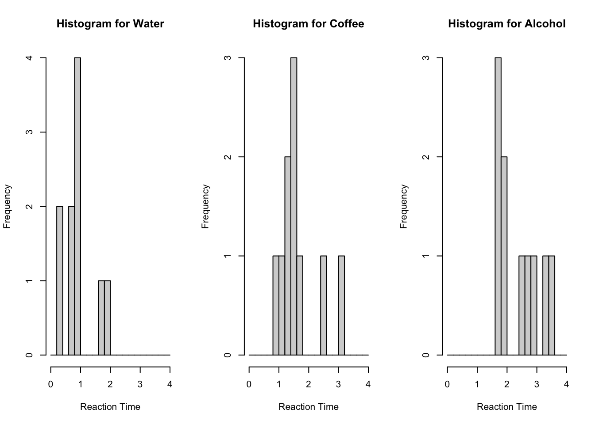
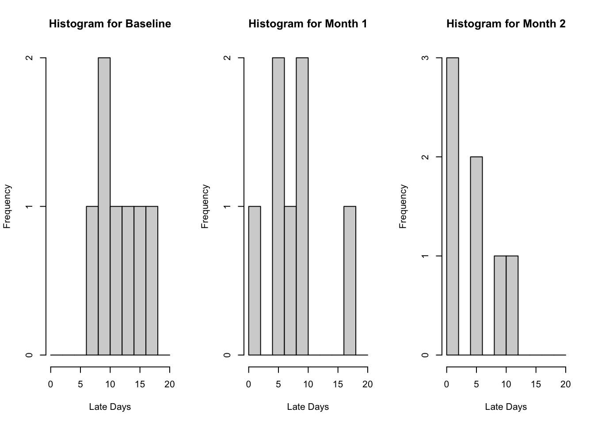

Please note that there is a file on Canvas called Getting started with R which may be of some use. This provides details of setting up R and Rstudio on your own computer as well as providing an overview of inputting and importing various data files into R. This should mainly serve as a reminder.
Recall that we can clear the environment using rm(list=ls()) It is advisable to do this before attempting new questions if confusion may arise with variable names etc.
Example 1
In this example we want to determine whether there is any difference between the driving reaction times after drinking water, coffee and alcohol in the Kruskal-Wallis (Reaction Times) dataset. Please follow the steps below:
Firstly, we input the dataset into R and check it using the ``head” command (recall this provides the first 6 entries). We use the readxl package to import the Excel file.
We next perform a test of normality on the standardized residuals to determine which method should be used. If the residuals are normally distributed and we have homogeneity of variances (Levene’s test) then we would use ANOVA. The following code creates and performs tests of normality on the residuals.
Shapiro-Wilk normality test
data: residuals
W = 0.89219, p-value = 0.005437
library(nortest)lillie.test(residuals)
Lilliefors (Kolmogorov-Smirnov) normality test
data: residuals
D = 0.14947, p-value = 0.08544
Clearly the residuals are not normally distributed, therefore we must use the nonparametric equivalent of the ANOVA procedure, i.e. the Kruskal-Wallis H-test. In order to determine the correct hypotheses, we next investigate the shapes of the distributions of the groups using histograms:
DrinkTypes<-factor(Reaction$"Drink Groups",c(1,2,3),labels=c('Water','Coffee', 'Alcohol'))par(mfrow=c(1,3)) hist(Reaction$"Reaction Times"[DrinkTypes=='Water'], xlab='Reaction Time', main='Histogram for Water', breaks=seq(from=0,to=4, by=0.2)) hist(Reaction$"Reaction Times"[DrinkTypes=='Coffee'], xlab='Reaction Time', main='Histogram for Coffee', breaks=seq(from=0,to=4, by=0.2))hist(Reaction$"Reaction Times"[DrinkTypes=='Alcohol'], xlab='Reaction Time', main='Histogram for Alcohol', breaks=seq(from=0,to=4, by=0.2))

From the histograms we see that the groups seem to have similar shaped distributions, therefore use the following hypotheses:
\(H_0:\) The medians of all groups are equal;
\(H_1:\) At least one group has median not equal to the others.
You should see that there is a significant difference between drinks 1 and 3, i.e. between water and alcohol. We therefore report medians using the following code:
The Diets dataset contains data on the weight loss of 3 groups of participants who took park in 3 different diets. Determine whether there is any difference in the effectiveness of the diets, fully justifying the method used.
Example 2
In this example we will continue the example of determining whether a bonus scheme improves lateness in employees. Recall the data below:
Employee
Baseline
Month 1
Month
1
16
17
11
2
10
5
2
3
7
8
0
4
13
9
5
5
17
2
2
6
10
10
9
7
11
6
5
We will now use a Friedman test to determine whether there is any difference in the medians of these groups. Please follow the steps below in R:
Next we check the normality of the residuals using the following code. We first need to upload the dataset Work Lateness.csv, which in a different format. (It is not as straightforward as in the Kruskal-Wallis case.)
Shapiro-Wilk normality test
data: residuals
W = 0.94283, p-value = 0.2478
The residuals seem to be normally distributed, however we continue with the Friedman test as the sample size is small (and we will see shortly that the data are skewed). We next investigate the shapes of the group to determine the correct hypotheses.
par(mfrow=c(1,3)) hist(Baseline, xlab='Late Days', main='Histogram for Baseline', breaks=seq(from=0,to=20, by=2)) hist(Month1, xlab='Late Days', main='Histogram for Month 1', breaks=seq(from=0,to=20, by=2))hist(Month2, xlab='Late Days', main='Histogram for Month 2', breaks=seq(from=0,to=20, by=2))

We see that the groups seem to have the same shaped distribution, hence we compare medians in the hypotheses. The histograms are all skewed, providing further evidence that non parametric techniques are not suitable. We now proceed with Friedman’s test. Note that we have to make a matrix out of the data to perform the test.
Pairwise comparisons using Tukey-Kramer-Nemenyi all-pairs test with Tukey-Dist approximation
data: LatenessNew$Lateness by LatenessNew$Bonus
0 1
1 0.0794 -
2 0.0072 0.6646
P value adjustment method: single-step
alternative hypothesis: two.sided
You should come to the conclusion from this output that there is a significant difference between Baseline and Month2. We next report their medians using the code:
median(Baseline)
[1] 11
median(Month2)
[1] 5
Exercise 2
Determine whether there are any differences between the groups Overall score (Video A), Overall score (Video B), Overall score (Video C) and Overall score (Demo D) in the Public Awareness SPSS dataset.
Hint: Before performing the Friedman test you will need to create a matrix of the relevant variables. The following code may help you to do this:
You will then need to create another dataset with one column containing all the awareness scores and a corresponding label column. I would suggest exporting your matrix created above using the write.csv() command and making these changes in Excel, then re-import your new dataset.